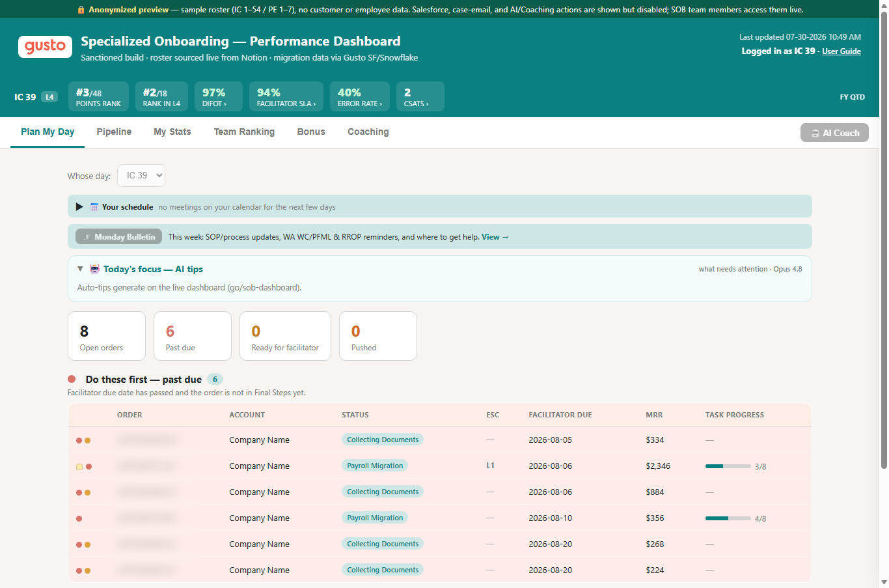
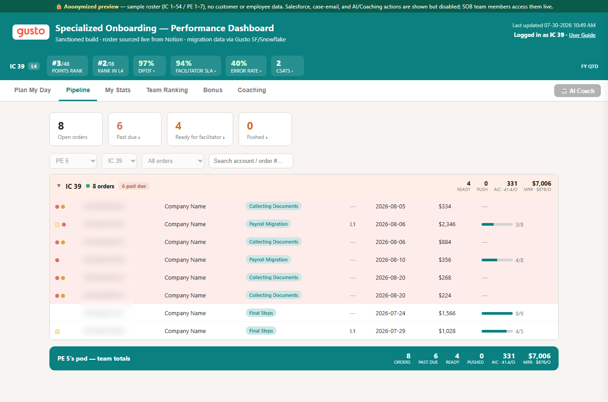
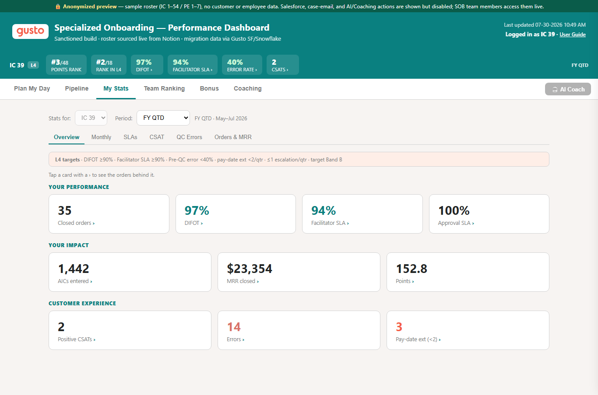
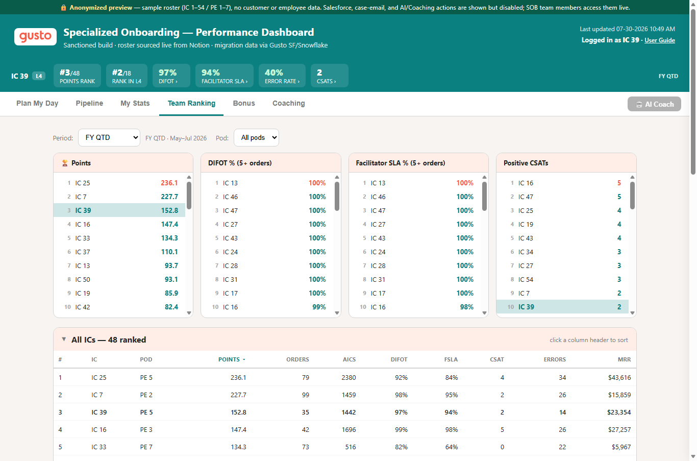

Summary
Customer experience and operations leader with 20 years leading teams, including managers of managers, across SaaS, e-commerce and technology. Builds the systems behind the operation: renewal programs, commission models, Salesforce Service Cloud (10 years, 3 ground-up implementations), executive dashboards and AI tooling. Deep contact-center, workforce-management and forecasting expertise; Six Sigma Green Belt.
How I Work
I bring structure to high-pressure operations and stay steady while doing it.
At adpay, I planned an 18-month rollout for a 15-center partner and finished the migration in 14.
I hold a high bar and make it transparent, with clear metrics and the reasoning behind them.
At Gusto, I found an SLA report that overstated results in performance reviews and fixed it so no one was scored unfairly.
Clear, direct feedback, with real care about each person's growth.
97% leader satisfaction at adpay; team satisfaction rose from the 70s to the high 80s at Gusto.
I step in to unblock or to build something that scales, then hand it back with documentation.
At Gusto, I built, solo, the AI platform and data-integrity checks my team used every day.
Core Competencies
Professional Experience
- Cut client time-to-value from 6 weeks to 2–3 by redesigning the sales-to-onboarding handoff.
- Managed 11 direct reports and was accountable for ~65 people. CSAT +20%, NPS +3, team ESAT from the 70s to the high 80s, and specialist throughput from about 10–14 migrations a month to 5–8 a week (April 2025 onward).
- Designed and built, solo, an AI performance platform (Salesforce, Snowflake, Claude API): a Plan My Day prioritizer, 8 data-integrity checks, and RAG-based coaches that raised First Contact Resolution 18%.
- Audited an SLA metric used in reviews, found it overstated results (double-counted orders, time-zone errors), and fixed it.
- Advised 15 enterprise clients on CX and workforce strategy, negotiating engagement terms directly with each.
- Identified $5M/year in expansion-revenue opportunities across 3 engagements and ~$5M in annual cost savings across the other 12 through better headcount forecasting (30% less WFM inefficiency).
- Built incident management across 5 organizations with no direct authority: 60% shorter incident lifecycle, +75% response efficiency, +30% client satisfaction; automation lifted ticket resolution to 99% and ESAT +18%.
- Created a proactive renewal program and the Preferred Partner Program (1,400–1,500 partners in a 3,000+ account network); retention rose from 74% to 89% to 93%.
- Ran an 18-month Enterprise rollout for a 15-center regional partner, onboarding thousands of businesses; finished 4 months early and grew partner revenue ~20% year over year.
- Led ~55 people across Support, Implementations and Sales through 3 Team Managers; cut the release cycle from 6 weeks to 3 as de facto TPM. Director of the Year; 97% leader ESAT.
- Drove a 15% increase in Adds revenue; built the sales-commission model (CRO/CFO-approved) and Tableau dashboards for the CEO, CFO and CRO.
- Ran a 250–300-person contact center through 12–15 Seniors, and led the UK and Australia offices for 2 years.
- Managed a 500–600-person BPO plus overseas partners; negotiated its renewal and later ran the bid for a new partner.
- Delivered +$4M annual revenue, +15% CSAT/NPS and 95% ESAT; built the training program (QA +11%) and a 12-person Team Lead tier from scratch.
- Forecast demand for 5 global sites ($25–30M/year book) with Erlang C, regression and exponential smoothing; +$100K profitability, −30% abandon rate; ran Xactly commission payouts.
Skills, Education & Languages
Tools: Salesforce Service Cloud (SOQL) · Snowflake · SQL · Python · Tableau · Apps Script · Claude API / RAG · Workday
Certifications: Six Sigma Green Belt, Workday Administrator · Education: BYU, B.S. Business Administration
Languages: English (native), Portuguese (fluent), Spanish (conversational)
Specialized Onboarding Performance & AI Platform
Team leadership + a self-built analytics, automation & AI platform · Gusto
I managed 11 direct reports and was accountable for ~65 people running live payroll migrations, including the largest and most complex. Seeing the team operate without a reliable shared view of performance, I designed, built, secured, and ran an end-to-end platform that became the team's daily source of truth. Solo, alongside managing the team.
The problem
Performance and workload lived across Salesforce, Snowflake, spreadsheets, and QC tools. Reporting was manual, lagging, and inconsistent — so managers coached from stale numbers, and refreshing it was a fragile, ~8-step chore.
What I built
- A role-aware web app (SSO-gated): Team Ranking, per-person stats with month-over-month history, a capacity-aware daily prioritizer tied to live calendars, live pipeline management, a transparent bonus model, and an anonymized guest view.
- Data engineering: integrated Salesforce, Snowflake, Notion, Calendar, CSAT, and QC systems into one model, behind a one-command refresh pipeline with 8 automated deploy-gating self-checks that block a bad deploy rather than ship wrong numbers.
- AI: coaching assistants grounded in a curated knowledge base (retrieval-augmented), plus an AI daily digest.
- Security: after a review — verified-identity auth, output-encoding/injection guards, and server-side per-viewer PII scoping so sensitive data never shipped to the browser.
Signature win — catching a metric error in the official numbers
When a facilitator-SLA metric was being used for performance reviews, I audited it against the system of record and found the official report was overstating results — double-counting orders that bounced through a status and mishandling time zones. My per-order method reconciled exactly to source; I verified it order-by-order, documented a defensible definition, and corrected the numbers — protecting my team from being unfairly scored.
Impact
- CSAT +20%, NPS +3; specialist throughput rose from about 10–14 migrations a month to 5–8 a week (April 2025 onward), and team ESAT from the 70s to the high 80s within the first few months of the tools.
- The AI Coach and SOP Coach drove an 18% increase in First Contact Resolution, with about 200 uses in the first week and only 2–3 thumbs-down ratings.
- Became the team's daily operating tool; collapsed an 8-step manual refresh into one self-verifying command.
- Gave managers trustworthy coaching data down to the individual order — built solo, end-to-end.
Details kept at a confidentiality-safe altitude — no customer or employee data, no internal financials.
Portfolio of Work
Selected initiatives — all built while leading an 11-person onboarding team.
1 · Onboarding Performance Platform (flagship)
Solo-built analytics + automation + AI platform that became the team's daily source of truth. Result: CSAT +20%, NPS +3; 8-step manual process → one command. Leadership · data engineering · security · product.
Screenshots below are from an anonymized preview build — sample roster IDs, no real customer or employee data; Salesforce/case-email/AI-coaching actions are shown but disabled.




2 · AI Coaching Toolkit
AI coaching assistants and a reusable toolkit of "skills" (including an automated QC-error coach) grounded in a curated knowledge base — contextual, source-backed guidance on demand. LLM/RAG · prompt design · enablement.
3 · QC Error Root-Cause Analysis
Analyzed the team's error data end-to-end; found an external QC vendor was over-flagging false positives and that W-4 handling was the true systemic #1 error — turned it into a team-wide fix. Data analysis · root-cause · quality.
4 · Metric-Integrity Audit
Independently recomputed a core performance metric from the system of record, caught the official report overstating results, and delivered a per-order method that reconciled exactly to source. Analytical rigor · SQL/SOQL · data integrity.
5 · Automated Weekly Team Briefing
Automated the recurring Monday update — live order data into a shareable, access-controlled status card — eliminating a standing manual chore. Automation · reporting · operations.
6 · Reliability & Continuity Engineering
Added a redundant scheduled publisher for resilience and authored a continuity/bus-factor audit and runbooks so the systems weren't dependent on one person. Reliability · documentation · ops maturity.
Let's talk
I'm looking for a leadership role — leading managers or ICs — in customer experience, client success, or operations, where contact-center excellence, process improvement, and data all matter.
📞 (801) 318-8037 · send a text
💼 linkedin.com/in/devin-j-parkes
📍 Highlands Ranch, CO · Fluent in Portuguese, conversational Spanish
Email me ⬇ Download résumé (PDF)